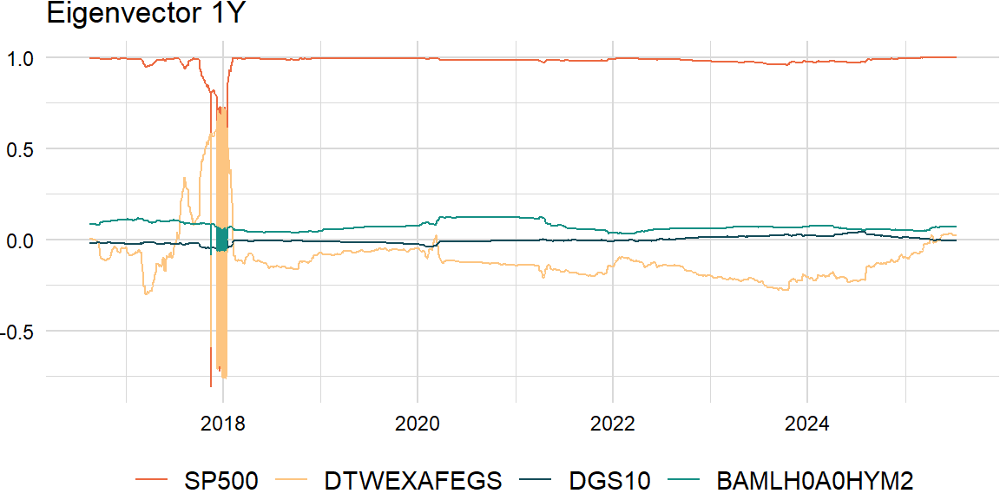
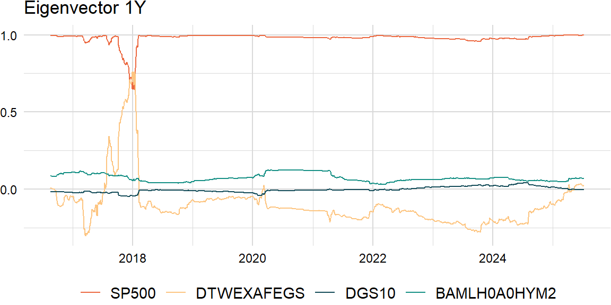
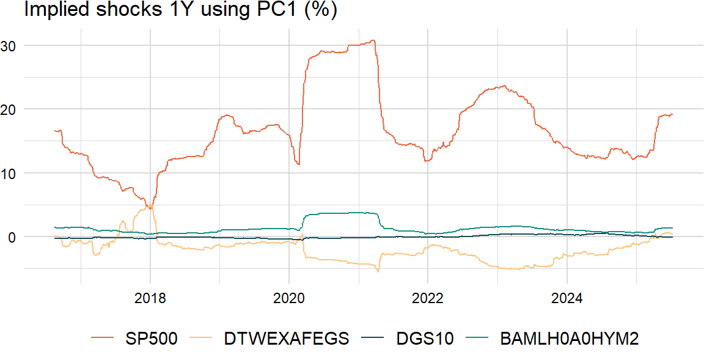

factors_r <- c("SP500", "DTWEXAFEGS") # "SP500" does not contain dividends; note: "DTWEXM" discontinued as of Jan 2020
factors_d <- c("DGS10", "BAMLH0A0HYM2")Decomposition
Underlying returns are structural bets that can be analyzed through dimension reduction techniques such as principal components analysis (PCA). Most empirical studies apply PCA to a covariance matrix (note: for multi-asset portfolios, use the correlation matrix because asset-class variances are on different scales) of equity returns (yield changes) and find that movements in the equity markets (yield curve) can be explained by a subset of principal components. For example, the yield curve can be decomposed in terms of shift, twist, and butterfly, respectively.
\[ \begin{aligned} \boldsymbol{\Sigma}&=\lambda_{1}\mathbf{v}_{1}\mathbf{v}_{1}^\mathrm{T}+\lambda_{2}\mathbf{v}_{2}\mathbf{v}_{2}^\mathrm{T}+\cdots+\lambda_{k}\mathbf{v}_{k}\mathbf{v}_{k}^\mathrm{T}\\ &=V\Lambda V^{\mathrm{T}} \end{aligned} \]
eigen_decomp <- function(x, comps) {
LV <- eigen(cov(x))
L <- LV[["values"]][1:comps]
V <- LV[["vectors"]][ , 1:comps]
result <- V %*% sweep(t(V), 1, L, "*")
return(result)
}comps <- 1eigen_decomp(overlap_xts, comps) * scale[["periods"]] * scale[["overlap"]] [,1] [,2] [,3] [,4]
[1,] 3.107577e-02 -0.0038700375 -8.093751e-05 2.631664e-03
[2,] -3.870038e-03 0.0004819572 1.007960e-05 -3.277357e-04
[3,] -8.093751e-05 0.0000100796 2.108035e-07 -6.854226e-06
[4,] 2.631664e-03 -0.0003277357 -6.854226e-06 2.228636e-04# cov(overlap_xts) * scale[["periods"]] * scale[["overlap"]]Variance
We often look at the proportion of variance explained by the first \(i\) principal components as an indication of how many components are needed.
\[ \begin{aligned} \frac{\sum_{j=1}^{i}{\lambda_{j}}}{\sum_{j=1}^{k}{\lambda_{j}}} \end{aligned} \]
variance_explained <- function(x) {
LV <- eigen(cov(x))
L <- LV[["values"]]
result <- cumsum(L) / sum(L)
return(result)
}variance_explained(overlap_xts)[1] 0.8876039 0.9924974 0.9982254 1.0000000Similarity
Also, a challenge of rolling PCA is to try to match the eigenvectors: may need to change the sign and order.
\[ \begin{aligned} \text{similarity}=\frac{\mathbf{v}_{t}\cdot\mathbf{v}_{t-1}}{\|\mathbf{v}_{t}\|\|\mathbf{v}_{t-1}\|} \end{aligned} \]
similarity <- function(V, V0) {
n_cols_v <- ncol(V)
n_cols_v0 <- ncol(V0)
result <- matrix(0, nrow = n_cols_v, ncol = n_cols_v0)
for (i in 1:n_cols_v) {
for (j in 1:n_cols_v0) {
result[i, j] <- crossprod(V[ , i], V0[ , j]) /
sqrt(crossprod(V[ , i]) * crossprod(V0[ , j]))
}
}
return(result)
}roll_eigen1 <- function(x, width, comp) {
n_rows <- nrow(x)
result_ls <- list()
for (i in width:n_rows) {
idx <- max(i - width + 1, 1):i
LV <- eigen(cov(x[idx, ]))
V <- LV[["vectors"]]
result_ls <- append(result_ls, list(V[ , comp]))
}
result <- do.call(rbind, result_ls)
result <- xts::xts(result, zoo::index(x)[width:n_rows])
colnames(result) <- colnames(x)
return(result)
}comp <- 1raw_df <- roll_eigen1(overlap_xts, width, comp)# # install.packages("devtools")
# devtools::install_github("jasonjfoster/rolleigen") # roll (>= 1.1.7)
# raw_df <- rolleigen::roll_eigen(overlap_xts, width, order = TRUE)[["vectors"]][ , comp, ]
# raw_df <- xts::xts(t(raw_df), zoo::index(overlap_xts))
# colnames(raw_df) <- colnames(overlap_xts)
roll_eigen2 <- function(x, width, comp) {
n_rows <- nrow(x)
V_ls <- list()
result_ls <- list()
for (i in width:n_rows) {
idx <- max(i - width + 1, 1):i
LV <- eigen(cov(x[idx, ]))
V <- LV[["vectors"]]
if (i > width) {
# cosine <- crossprod(V, V_ls[[length(V_ls)]])
cosine <- similarity(V, V_ls[[length(V_ls)]])
order <- apply(abs(cosine), 1, which.max)
V <- t(sign(diag(cosine[ , order])) * t(V[ , order]))
}
V_ls <- append(V_ls, list(V))
result_ls <- append(result_ls, list(V[ , comp]))
}
result <- do.call(rbind, result_ls)
result <- xts::xts(result, zoo::index(x)[width:n_rows])
colnames(result) <- colnames(x)
return(result)
}clean_df <- roll_eigen2(overlap_xts, width, comp)
Implied shocks
Product of the \(n\)th eigenvector and square root of the \(n\)th eigenvalue:
roll_shocks <- function(x, width, comp) {
n_rows <- nrow(x)
V_ls <- list()
result_ls <- list()
for (i in width:n_rows) {
idx <- max(i - width + 1, 1):i
LV <- eigen(cov(x[idx, ]))
L <- LV[["values"]]
V <- LV[["vectors"]]
if (length(V_ls) > 1) {
# cosine <- crossprod(V, V_ls[[length(V_ls)]])
cosine <- similarity(V, V_ls[[length(V_ls)]])
order <- apply(abs(cosine), 1, which.max)
L <- L[order]
V <- t(sign(diag(cosine[ , order])) * t(V[ , order]))
}
shocks <- sqrt(L[comp]) * V[ , comp]
V_ls <- append(V_ls, list(V))
result_ls <- append(result_ls, list(shocks))
}
result <- do.call(rbind, result_ls)
result <- xts::xts(result, zoo::index(x)[width:n_rows])
colnames(result) <- colnames(x)
return(result)
}shocks_xts <- roll_shocks(overlap_xts, width, comp) * sqrt(scale[["periods"]] * scale[["overlap"]])